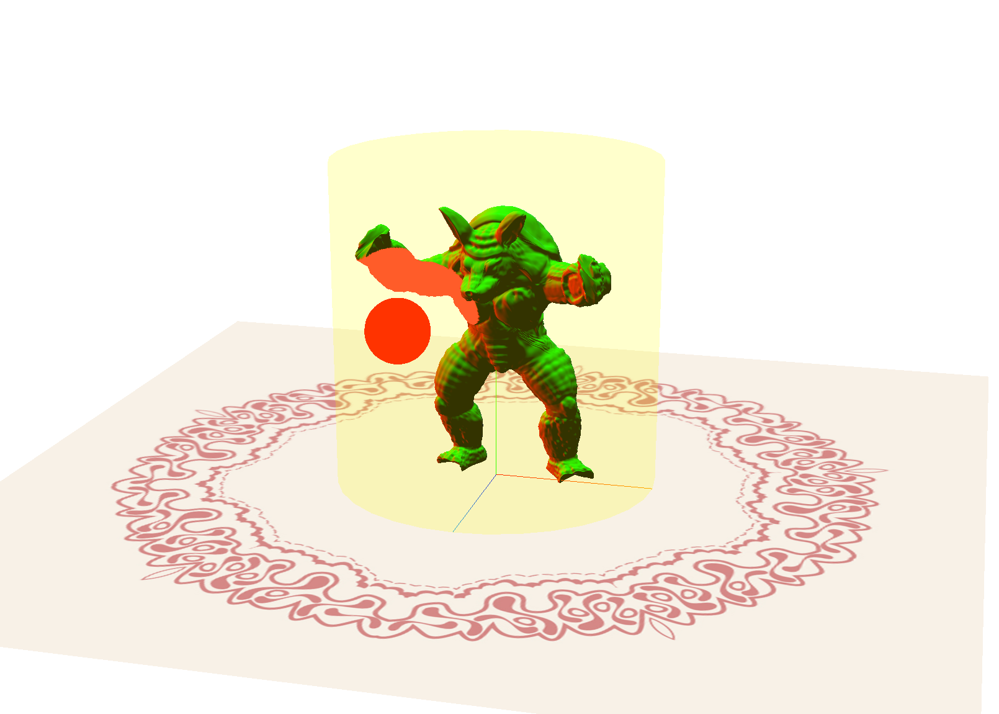
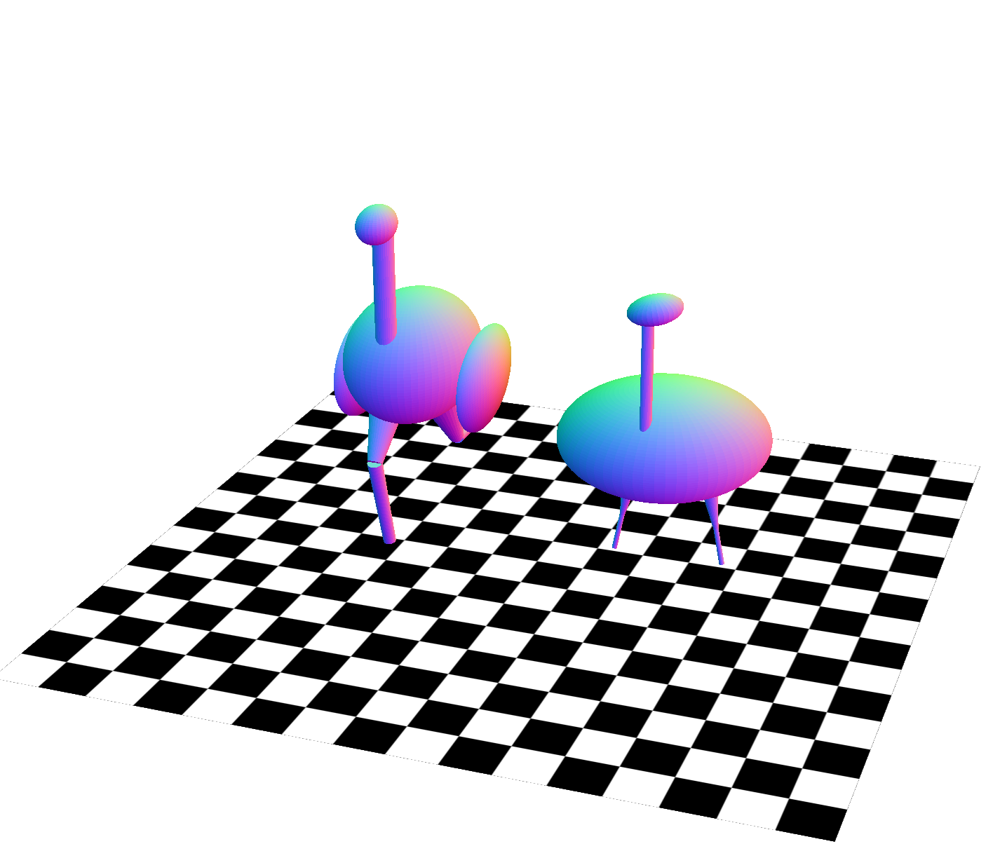
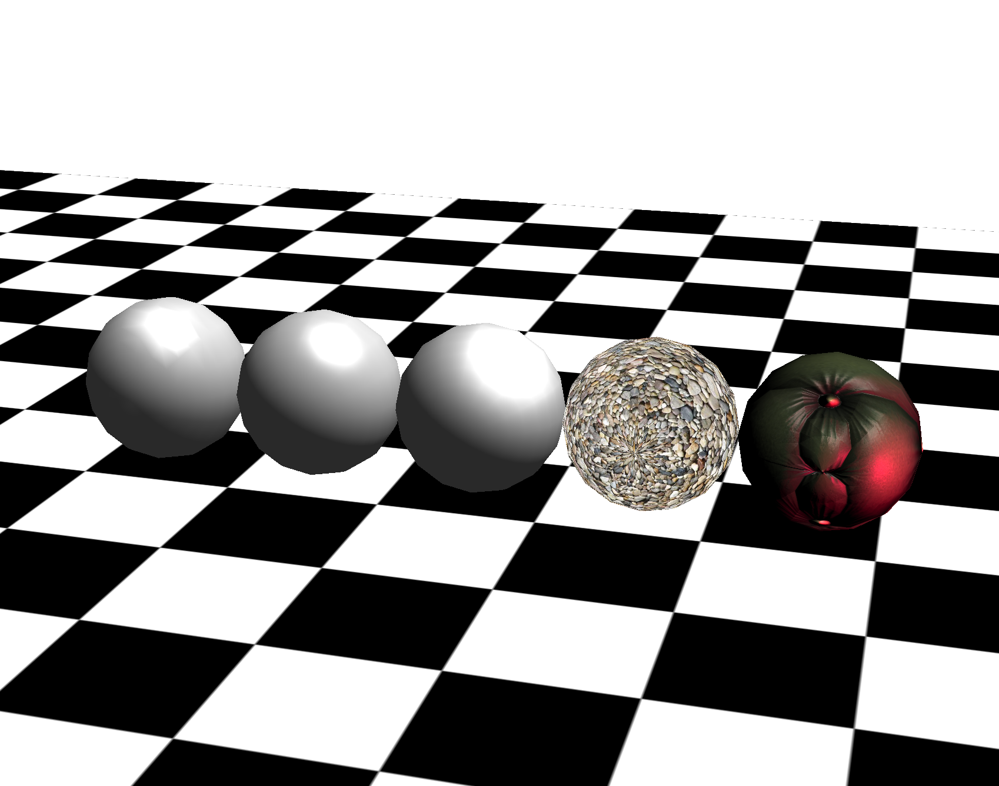
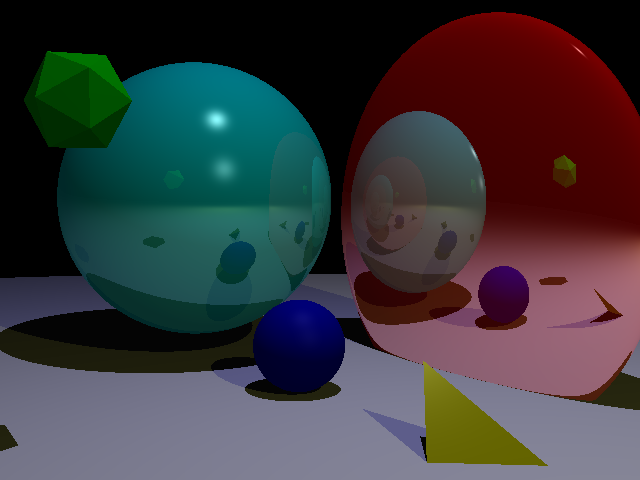
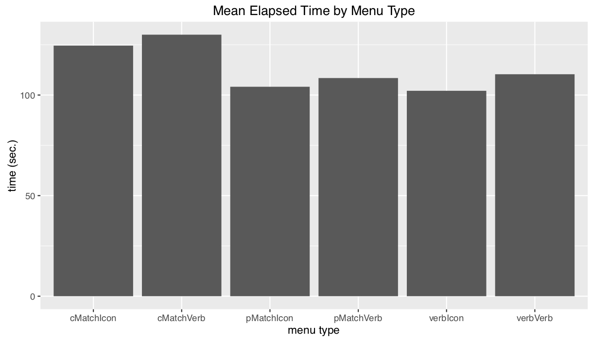
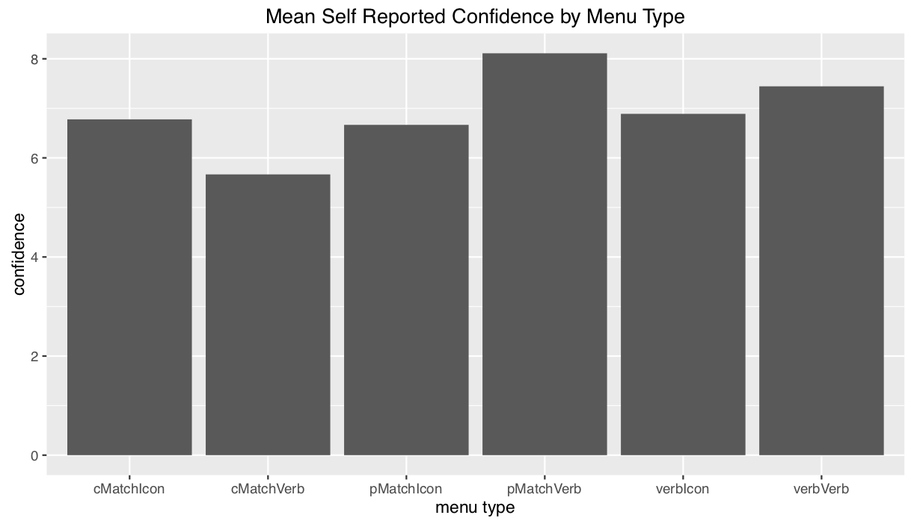
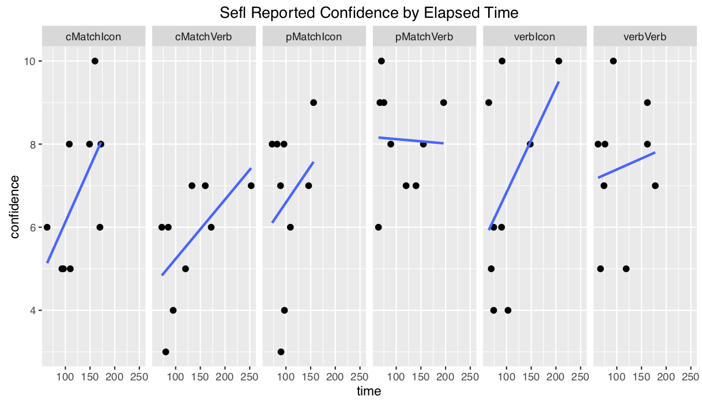
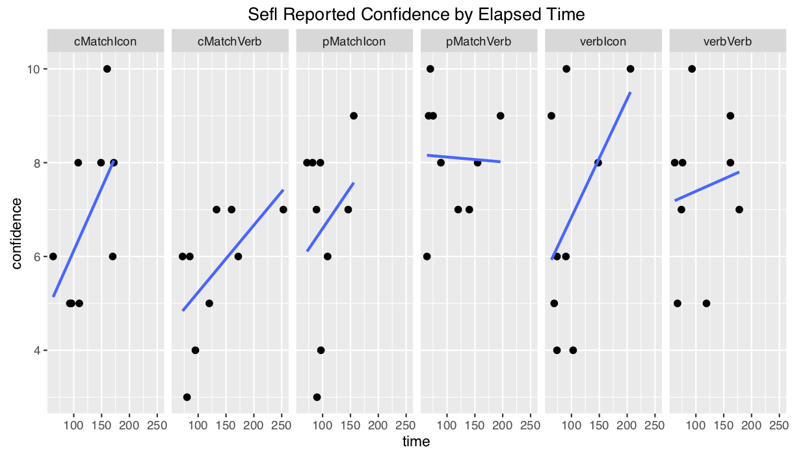

About Me
Hi, my name is Buyun Wang. I am a computer science new grad from UBC. After learning all kinds of algorithms, languages and programming skills, I am always eager to test my abilities in a practical way. I am a quick learner and tend to have a good grasp of fast evolving technologies. I am also a team player as I have been working in several companies and have experience in both mobile application development and website development.
I am interested in the front end development as I am majorly a visual learner and I am quite intrigued by user interface and how users interact with the program. Computer graphics is another area that I have set my foot in with shading language like OpenGL and APIs like Three.js. The languages I am most familiar with inclue Python, C++, Java, JavaScript, HTML5 and CSS3. I also have experience with Node.js, Bootstrap and Object Oriented Programming.
Need help with the design?
The design skills I acquired have enabled me to deliver an idea from prototype to final product. It includes Photoshop, GIMP and Illustrator.
/brianwang
Projects
DriveEarth Mockup & Wireframing Design
During the hackathon and entreprenuership program held by European Innovation Academy in the summer of 2014, our team worked on a project to connect people on the road --- a mobile application called DriveEarth(now Wever).
My Role
The final product is a workable and responsive prototype that was built with Fluid UI. It contains all of the user cases we were trying to address and combines a fun eco-friendly framework (gamification) with a real time and traditional carpooling service to drivers and passengers. I took on the role to design app wireframing, icons, logo, pitch slides and typography of drive-earth.net(currently wever.fr), which led to the creation of an app mockup and the first version of our website.
To achieve the fun aspect of our carpooling application(gamification), a set of character designs(birdies) were carried out using Adobe Illustrator and Adobe Photoshop. Character attributes were taken from RPG games to give a sense of developing a perfect digital companion while ordering/sharing rides with others. The tuned down version of the neon color scheme was a tribute to games from the 80s and 90s.
Tools
FluidUI, HTML, CSS, JavaScript, Bootstrap, JQuery, Adobe Photoshop, Adobe Illustrator
DrinkSmart with OO Design
DrinkSmart is a CPSC310 course project and a group effort of 4, following a scrum software team process and an agile process model. Making use of the dataset of drinking fountains from the city of Vancouver, DrinkSmart aims to help joggers, runners and bikers to easily get hydrated without carrying around water bottles on the road. Users can view, save, rate and review drinking fountains by logging in to their Facebook accounts or registerring new accounts on the website. The comments are shared with all users registered or unregistered to save time while doing sports activity.
My Role
The final product is a responsive web AJAX-rich appliaction built with GWT using an object oriented design pattern. I took on the role to design data object, build UI and manage events. To enrich the functionality and ease of use, the interface is kept clean and simple without rich colors to distract user's attention from the map. A black geo tag differenciates itself from the red ones which is designed to be moved by the user to display a list of drinking fountains near a specific location. Users can view the top 10 rated drinking fountains and their personal collection easily by tapping on the different tabs of the table list which is sorted alphabetically to switch view. A fullscreen view can be found here.
Tools
Java, CSS, GWT, AJAX, JUnit, Adobe Photoshop
Graphics Programming with Three.js and WebGL
The projects are completed during CPSC 314 in UBC. Template codes are provided by Mikhail Bessmeltsev. This course provides an introduction into the basic components of computer graphics including the mathematics and physics for computer graphics, foundations of 3D rendering, image processing and rendering pipeline.
Animated Armadillo
The template provides a simple scene with a yellowish 3D display, working normally and displaying an armadillo, and a non-functioning red remote control. The variable remotePosition is changed using arrow keys and passed to the remote control shader (remote.vs.glsl) using uniform variables in response to keyboard input. The remote control’s fragment shader (remote.fs.glsl) is modified so that it changes its color according to a uniform variable tvChannel. You are able to switch channels using your keyboard (keys 1-3) and see the remote react. The fragments that are within some distance of the remote changes color due to the modification to the character’s shaders. The armadillo is distorted in different ways for different channels including deforming the vertices in the armadillo in a wave over time and exploding the model along face normals. See it in action here.
Ostrich with Transformation
The template provides a torso, (placed with respect to the world coordinate frame) a neck, (placed with respect to the torso coordinate frame) and a head (placed with respect to the neck coordinate frame) of the ostrich leaving the legs to be completed. The legs I added consist two parts, both of which are cylinders: a thigh, (placed with respect to the torso coordinate frame) and a lower leg (placed with respect to the thigh coordinate frame). The thigh and lower leg coordinate frames are rotated so that they move like the ostrich is running. The lower leg not only moves with respect to the thigh, but also has an independent motion. The running animation is cyclical and continues to move back and forth. They are moving at a reasonable speed. A timer is used to keep animation speed consistent instead of animating the legs every frame. Five different poses for the static body coordinate frames are added. Pressing the number keys between 0 and 5 should each show a different pose.See it in action here.
Shading, lighting and Textures
This project demonstrates couple of common shading methods including Gouraud Shading, Phong Reflection and Phong Shading, Blinn-Phong Shading and some basic texturing. The lightColor, lightDirection and ambientColor variables are defined as well as material properties for the objects(defined in kSpecular, kDiffuse and kAmbient). Gouraud shading calculates the lighting of an object at each vertex (e.g. in the vertex shader). The standard graphics pipeline will then interpolate the color of the object between the vertices to get the individual fragment colors. The Phong reflection model is achieved by passing the lighting parameters (such as the triangle normal and vertex position) as varying variables to the fragment shader. Then calculate the lighting of the mesh at each fragment using the interpolated lioghting parameters. This allows the shading model to better approximate curved surfaces and produces a very smooth shading model. The main calculations are done in the fragment shader. Blinn-Phong Shading is achieved by computing the dot product between the halfway vector between light and viewing direction, and the surface normal. In the texturing part, UV coordinates are taken from the vertex buffer (three.js provides them for free on default objects such as the sphere in our assignment). UV coordinates are a 2D index into an image file whoose RGB values can be used to help color the mesh.See it in action here.
Ray Tracing
The first step to implement ray tracing is the basic ray casting for all pixels in the image, using the camera location and the coordinates of each pixel. Then iteratively test all the object’s intersection with the given ray and update the depth as the first intersection’s depth. The functions of intersection tests and the functions of casting primary rays are implemented in regard to different geometries to test if a ray intersects the objects. Next step is local illumination. It's achieved by calculating the ambient, diffuse, and specular terms in order to determine the color at the point where the ray intersects the scene. Then to implement the shadow ray calculation and update the lighting computation accordingly, shadow ray is emitted from a point to compute direct illumination to determine which lights are contributing to the lighting at that point. Finally to implement the secondary ray recursion for reflection, the rayDepth recursion depth variable is used to stop the recursion process and update the lighting computation at each step to account for the secondary component.
Tools
JavaScript, GLSL, Three.js, C++, Some math skills
Shortcutters App with UX Design
Shortcutters app is a CPSC444 course project and a group effort of 5, focusing on the advanced methodologies of human-computing interactions. This page shows the experiment report of this project along with the prototype. The main purpose of this study is UX research, the methods used to conduct user testing, and how to analyse the data produced to write a research report. The detailed journal of the progress can be found in our blog.
A video introduction
My Role
To create responsive low to high fidelity prototype for a range of tests from cognitive walkthrough to experiment design, we opted for Justinmind to satisfy our prototyping and wire framing needs. I was responsible for the creation of various user interface design, iterations of workflow design, storyboarding and experiment design with data analysis tools.
Tools
Justinmind, Adobe Illustrator, Teamwork
1. Introduction
Getting around in a city in style is becoming more and more popular around young generations. We see various kinds of applications providing this type of functionalities come on the stage from time to time, ranging from carpooling applications that allow different people to easily share ride with each other depending on the need, to smart navigation apps that crowdsources real-time data from drivers to personalize best possible routes. Our prototype is about a crowdsourcing navigation app that offers personalized routes choosing experience in a social setting. Current popular navigation apps like Google Maps and Waze seem to miss out on this fantastic feature. This report describes the experiment instrument and method in details, discusses the problems and limitations encountered and the relation to other works for future work and practitioners.
2. Description of the Experiment
2.1 Introduction and goals
Our prototype focused on discovering alternative routes to a destination. These routes could be in the city, on a hike. They could be on the map, or more than likely the novelty of our solution will be that we want to help users discover routes that may not be on maps. After conducting field study and cognitive walkthrough in milestone II, we learned that potential users may choose their routes on focal points like distance/time, safety and scenery. One of the biggest challenge would be to decide what types of look and feel is the best for our user to quickly and accurately select the route that caters to their needs the best. Our main goal of the experiment therefore is to determine what filter results should be displayed to maximize user confidence in a route. To further expand our goal we are testing our interface based on two different variations, how the filter percentage results are displayed, and how the best matching filter is displayed. We also had two subgoals: 1. To determine if verbal or visual representations in “best filter match” leads to a higher confidence.2. To determine with factor level leads to the quickest user decision. We believed that percentage report for each specific focal point user can alter in filter together with text should work the best theoretically.
2.2 Methods
2.2.1 Participants
We recruited 10 participants (2-3 participant per group member) not including pilot test. The participants consisted of mainly students over 19 years old, either randomly sampled on UBC campus or recruited through friends. They were given little instructions to begin and didn’t fill out any questionnaire. These were representative users even they didn’t fully cover the target demographic types.
2.2.1 Participants
We recruited 10 participants (2-3 participant per group member) not including pilot test. The participants consisted of mainly students over 19 years old, either randomly sampled on UBC campus or recruited through friends. They were given little instructions to begin and didn’t fill out any questionnaire. These were representative users even they didn’t fully cover the target demographic types.
2.2.2 Conditions
We are comparing which of the following methods/different interface types of showing filter results gives users maximum confidence in a route:
- Short verbal descriptions (eg. “Perfect match!” or “you can live with it…”)
- Plus a little icon for the category it’s best matched to (eg. rocket or scenic photo, etc.)
- Or a verbal description of the category it’s best matched to (e.g. “scenic”, “Fast”)
- Percent match (as a number) for each of the categories (rain cover, speed, scenery, etc.)
- Plus a little icon (same as above)
- Or a verbal description (same as above)
- Aggregated/ combined percent match, as in one big number encompassing a weighted average of the percent match in all categories.
- Plus a little icon (same as above)
- Or a verbal description (same as above)
2.2.3 Tasks
Participants were asked to perform three tasks. All tasks aim to test the main feature of our application which is to quickly find a route based on a set of desired preferences. In the first task, participants were given a scenario where they value scenery the most; this means the first slider on the filter page should be adjusted to be closest to the scenic end, and the participants can freely adjust the other two scrollbars. After doing so, the participants were asked to select a route from the result page that best matches the criteria. Similar as the first task, in the second task, the task is targeted to the level of safeness of a route. In the third task, the third scrollbar will be targeted, and participants were asked to find a route which is mainly set outdoors.Task 1: Imagine you a UBC student trying to get from your residence in Totem Park to your class in Buchanan A. You are not tight on time so you prefer to take a route that is scenic. Your class is in the middle of the day and it is bright and sunny outside so you don’t have much of a preference about safeness or rain cover. Task 2: Imagine you are commuting from work place in downtown Vancouver and you want to get to your home in East Hastings. It is 6:30pm and dark outside, it is not raining. You prefer to take a route that is clear of any back-alleys and is properly lit at all times. You are not in a big hurry to get home. Task 3: Imagine you are spending the day with your family on Granville Island. You wish to get from the parking lot to the docks and prefer to avoid the crowds indoors. You are not in a hurry and there is no sense of danger around.
2.2.4 Design
This experiment was conducted using a 1x6 within subject design, with 1 level of expertise and 6 interfaces that were tested. Performance(time) and satisfaction(confidence level) were both measured within subjects. Each participant completed one task on each of the six conditions, for a total of 6 trials. For each trials we looked at three metrics for evaluation: time, error tally and confidence level. We used timer to record time lapses, number of corrections for error tally and participants rating on a scale from 0 - 10 for confidence level. We used 6 tasks in total for the experiment. Although the tasks were designed to have similar difficulties but depending on the background of participants one scenario may appear to be harder to imagine for one participant than others. Therefore we gave user random task and condition pair for 6 trials to minimize the potential negative learning curve effect on every first trial.
2.2.5 Procedure
- Before the Participant Begins:
- Start a timer app on your mobile device, and ensure that it has a “lap” feature.
- Randomly select an order to conduct the trials in. I’d recommend using https://www.random.org/lists/ to do this.
- Open the medium fidelity prototype, and navigate to the search display for the first randomly selected trial.
- Ensure that you have a notepad and a pen. Begin by recording the randomized ordering of trials that you generated.
- When the participant arrives:
- Request that they sign a consent form.
- If the participant is willing to share, record their age and gender identity.
- Show them a few of the primary screens on the medium fidelity prototype, and offer a very brief (2-3 sentence) explanation of our design, and what it seeks to accomplish.
- Ask if the participant has any last questions before you begin.
- Running a trial:
- For each of the 6 conditions and 3 tasks, record which condition and which task you’re conducting the experiment in.
- Give the participant the corresponding task (see above) and tell the participant from where to where they will be selecting a route.
- Ask them if they’re familiar with the area, and if so, record their familiarity as a rating from 1 (never seen before) to 5 (walk there on a daily basis).
- Start the timer.
- Ask the participant to select a route from those provided by the search results that best matches the scenario in the task.
- Any time the user seems confused or makes clicks on something that might lead them away from the search results, please:
- record the time at which this happens with the “lap” button
- make a short (1 sentence) note about the confusion/error
- and provide assistance as necessary.
- When the user finally chooses the route they would like to take, stop the timer and record that time.
- Ask the user how confident they feel that this will be the best route for them expressed on a scale of 1 (they wouldn’t use this route) to 5 (this is the best possible path to where they’d like to go).
- If they do anything unexpected or interesting, make note of it.
- Ask them “How trustworthy do you think these results are?” and “How did you select the route you did”.
- Finally, review the recorded “laps” and attribute these times to your notes of hours.
- Reset the timer, and return to the beginning of section 3, Running a Trial.
- Wrap-Up:
- At the end of all the trials, take a photo of your notes as a backup.
- Stash the consent form somewhere safe.
- Thanks the participant for their willingness to help out!
2.2.6 Apparatus
In ICICS X360, we gave participant a laptop with prototype opened up in browser and let participant perform task. One team member observe the user, while another team member takes notes and record time with a stopwatch.
2.2.7 Independent and dependent variables
- Independent: Methods of showing filter results (short verbal, percent match, aggregated percent match, plus verbal or icon for best match).
- Dependent: Time length, Error tally, User confidence level (on scale 1-10).
2.2.8 Hypotheses
- Aggregated percent match with text descriptions will give users maximum confidence in result selected. (That is: H0: Conftext agg. <= Confnumerical agg. = Conficon agg.)
- Text will perform better over icons for best filter match as some users might have different interpretations on what icons are meant to convey on the search results. (That is: H0: ttext >= tnumerical = ticon)
2.3 Problems/Limitations
One of the problems we encountered was that user was not be able to tell the difference of confidence level perceived between the 6 different methods of display. Some participants were not familiar with some task scenarios. Also, how well participants are familiar with variety of apps and/or social media sites had an effect on how well the participant performs (e.g. if a user is familiar with Stack Overflow or Reddit, they will be well familiar with the upvote/downvote arrows, while participant that rarely uses these social media might get confused with what they are).
3. Results
In our test we used one-way ANOVA with alpha=0.05 to test for difference between interfaces in terms of confidence level and time. Table of differences in confidence across different factors:
| Icon vs Verbal | Tasks | Disp:Age | |
|---|---|---|---|
| Sum | 1.19 | 0.03 | 15.15 |
| Mean | 1.19 | 0.03 | 7.574 |
| F-value | 0.245 | 0.008 | 2.337 |
| Pr(>F) | 0.623 | 0.928 | 0.108 |
From the charts below we can see aggregated percent match with text descriptions gives users most confidence in completing the tasks while aggregated percent match with icon costs users least time.
  

4. Discussion
4.1 Interpretation of results
Unfortunately due to our small sample size, there is no significant differences in confidence across our different factors where we hope to see some positive result. The most significant thing we get to see is the difference is in the interaction effects between task and trial, but this is unreliable given the miniscule sizes of these subdivided groups. Therefore we failed to reject any of our null hypothesis.
4.2 Relation to other works
Our study showed small improvements in relation to other experiment in as sense that we have used a very scientific approach but this field of display testing is old.
4.3 Impact for practitioners
After conducting the experiment we believe that cell phone may be the best media to test a mobile application design because of the familiarity brought by the phone.
4.4 Critical reflection
After our initial piloting phase and cognitive walkthrough (see Blog Update #3), we learnt that we needed to develop a better aspect of our interface to test. From our original low-fidelity paper prototype, we decided to design five other ways in which we could present our results to users. This was a big change in our interface’s design as it required a full analysis of all of our interface’s elements in order to determine how, and in which combinations, they should be presented to our users.It was surprising to learn that users preferred a full breakdown of the filter statistics (individual percent matches) as compared to combined or verbal percentages. In theory, we thought that people would prefer the combined percentages as it provides less information to process than a multiple of percentages which takes more time to process. It was also interesting to observe that participants performed the tasks faster when given an icon instead of a text label for the best filter match. The methods that we choose to use for our evaluation allowed us to collect the basics of what we were looking for. As mentioned in Blog Update #7a, it would have been best to have tested each condition using multiple tasks, however, respect for our participant’s time and our own time restrictions prevented us from performing a more in-depth study. It would have also have been helpful if we had a post-experiment questionnaire ready to collect a consistent set of observations rather than freely asking questions after each trial. Our chosen method may have caused inconsistencies as we performed some trials of the experiment individually, and not in groups of two or more as planned.Justinmind was a great choice in software to develop our medium-fidelity prototype in. It allowed for an efficient way of recreating our low-fidelity prototype (see Blog Update #3), and resulted in a product that we could reliably test in our experiment. Prior to the creation of our medium-fidelity prototype, the cognitive walkthroughs performed on our paper prototype proved to be valuable as it allowed us to further develop our concept as described above.
5. Conclusions
No statistically significant results were produced by this study. There is some evidence to suggest that users perform tasks faster when presented with an icon in replacement of a verbal/text label. There is also some evidence to suggest that individual percent matches lead to a greater subjective user confidence when given the choice between individual, combined, and verbal presentations. Conversely, participants disliked the verbal percent matches the most, claiming that the labels (ex. “worth a shot”) were too ambiguous. The common theme here is that participants want to know as much information as possible about the available routes in order to conduct their own analyses, rather than trusting our summaries and encodings. Further testing is necessary to determine which of the six conditions performs the best. For now, the evidence points to individual percentages with icons for the best matching filter.
6. Recommendation
Although we failed to reject our null hypotheses at the ⍺=0.05 level, we did see an increase in the mean confidence for our percent-match menu encoding. Given more time and resources, it would be valuable to run more of these studies with a larger subject pool in hopes of achieving statistical significance (in support of any hypothesis). It would interesting to further explore how our current set of conditions perform under different circumstances. Having one user perform multiple tasks under the same condition would help us to improve the depth of our results. It would also be interesting to experiment using a different set of filters; perhaps more rudimentary filters (fast versus slow, or scenic vs urban) would perform better than the three combinations presented in our current prototype.Going forward, we should reduce the amount of ambiguity in our prototype, specifically with the route filter system, and how the icons are used to present resulting data. What seem to work well with our prototype that we should include more of is concrete data presentation, and system feedback. Users who were initially confused with the route filters, liked it when moving them resulted in change of information which helped informed them about our system.One limitation in our current system is that users can’t dig deeper into a search result aside from what is presented on the results page. To properly assess confidence in a route, it would be intuitive for users to want to learn more about how that route operated to make a proper judgement. The main improvement here would be to make the prototype slightly more vertical to allow more room for exploration. Another way that we could generate better data would be if the back-end had a little more functionality to allow percentages to be calculated dynamically, based on a user’s inputted filter preferences. Implementing this feature would result in more realistic search results to be displayed, rather than the static set which works better for some tasks and not so well for others.
Acknowledgements
I would like to acknowledge Joanna McGrenere and Francesco Vitale for providing us with a framework under which to conduct this project and for their excellent feedback as to the strengths and weaknesses of our designs.
Course: UBC CPSC 444 Subject: Advanced Methods for Human-Computer Interaction Project Type: UX Design, User Testing, UX Research Date: January-April 2017
Skills
UX & UI design
Logo design
Motion design for UI
Computer Graphics
Web design & development
Mobile & responsive design
Let's get in touch!
buyunwang@hotmail.com /buyunwang /brianwang /buyunwang /buyunwang